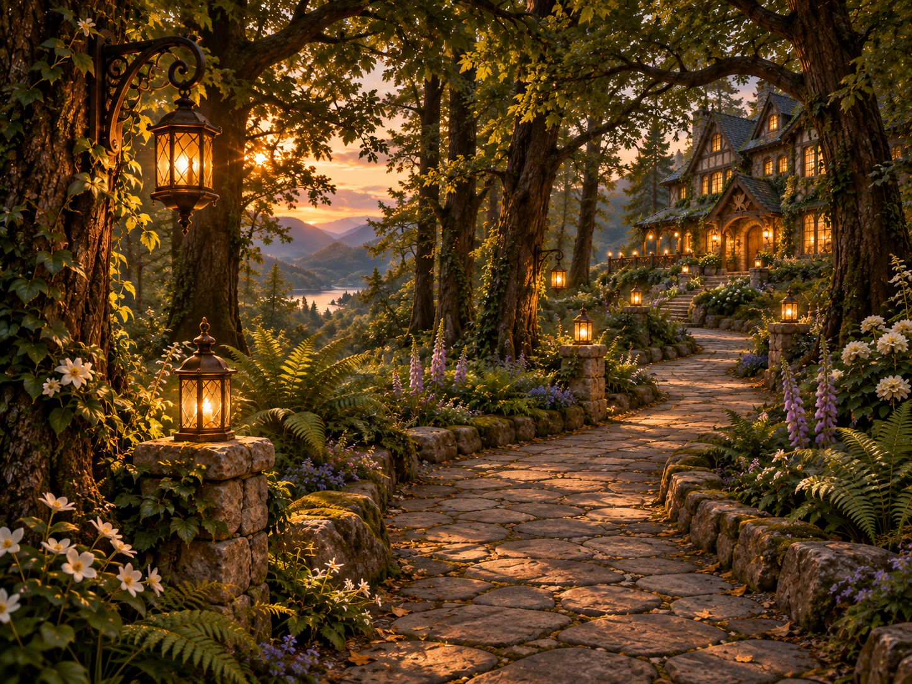
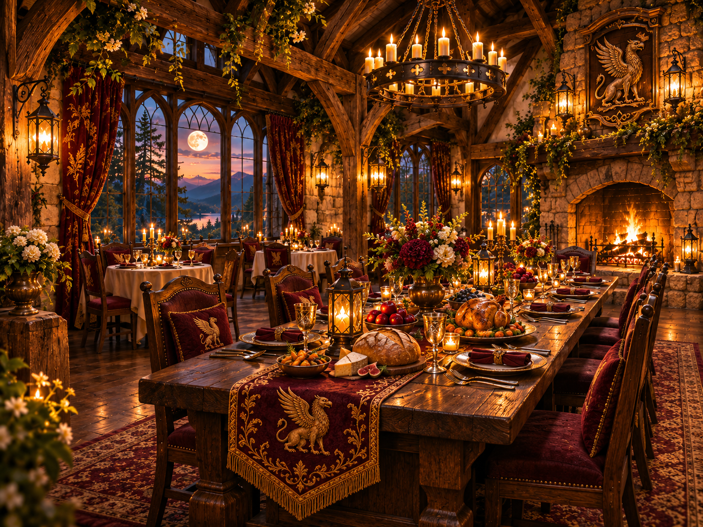
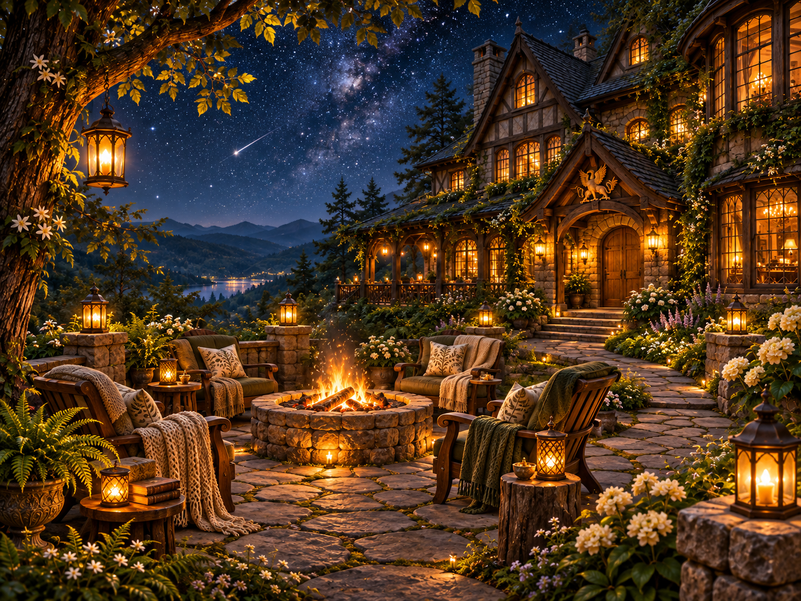

Weekend Adventures
A stay at The Moonlit Griffin is about more than finding a comfortable place to rest. Throughout the weekend, guests can enjoy peaceful outdoor activities, evening gatherings, and fantasy inspired experiences designed to make every visit feel like a small adventure.
Enchanted Woodland Walk

Explore the wooded trails surrounding The Moonlit Griffin during a peaceful guided walk. Guests can enjoy the forest, scenic overlooks, and quiet gardens while learning about the plants and wildlife found throughout the area.
Woodland walks are offered Saturday mornings and are included with every weekend stay.
The Moonlit Feast

Saturday evening brings guests together for The Moonlit Feast, a special dinner inspired by the atmosphere of a traditional fantasy inn. Guests can enjoy a hearty meal, warm lighting, and a relaxed evening in our dining room.
The feast is available to overnight guests for an additional charge of $35 per person.
Fireside Stories & Stargazing

End the evening beside the garden firepit with warm drinks, stories, and a clear view of the night sky. Guests are welcome to relax around the fire or explore the gardens beneath the lanterns.
Fireside gatherings are held Friday and Saturday evenings, weather permitting.
Weekend Schedule
- Friday Evening - Fireside gathering and garden access
- Saturday Morning - Enchanted Woodland Walk
- Saturday Evening - The Moonlit Feast
- Saturday Night - Fireside stories and stargazing
- Sunday Morning - Complimentary breakfast before departure